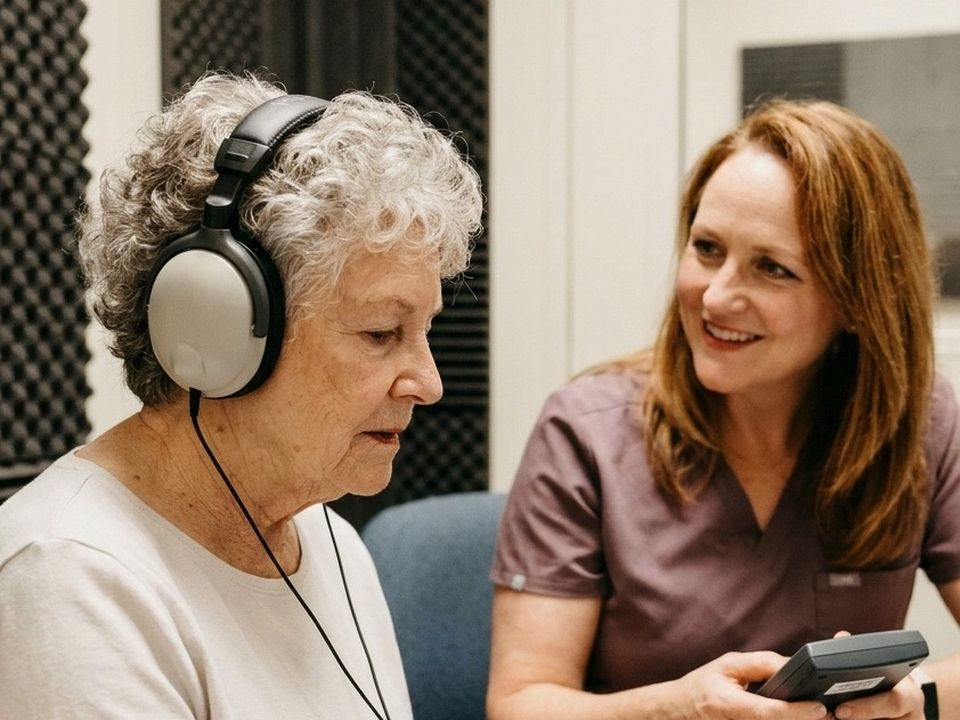
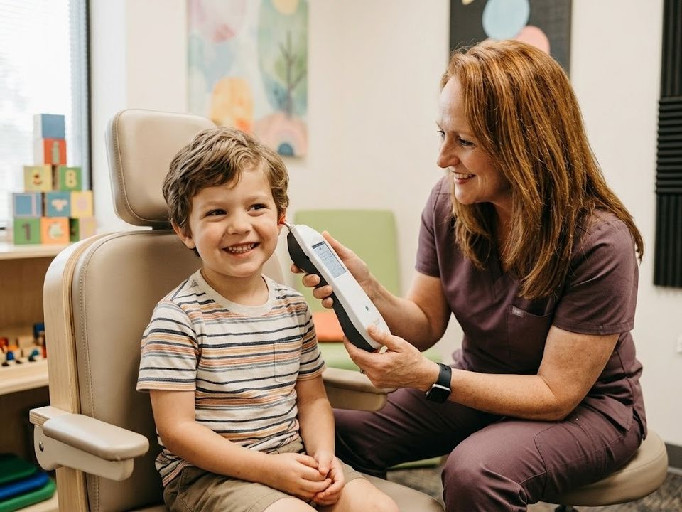
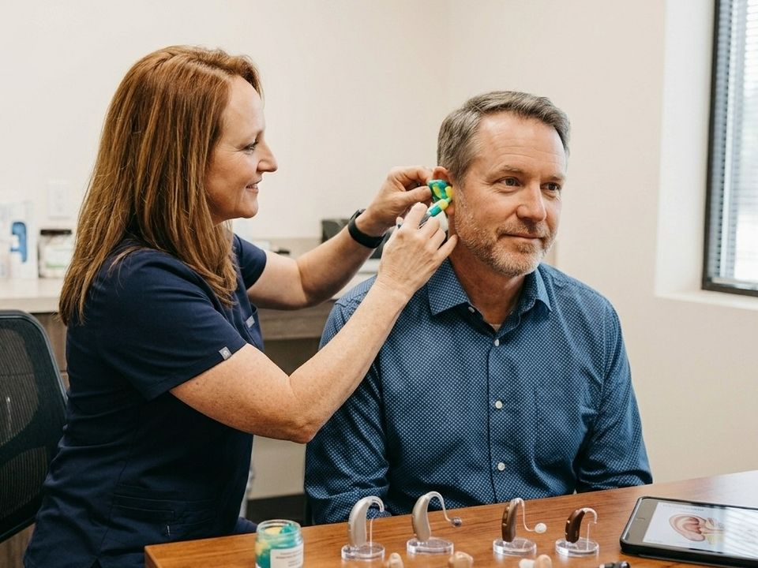
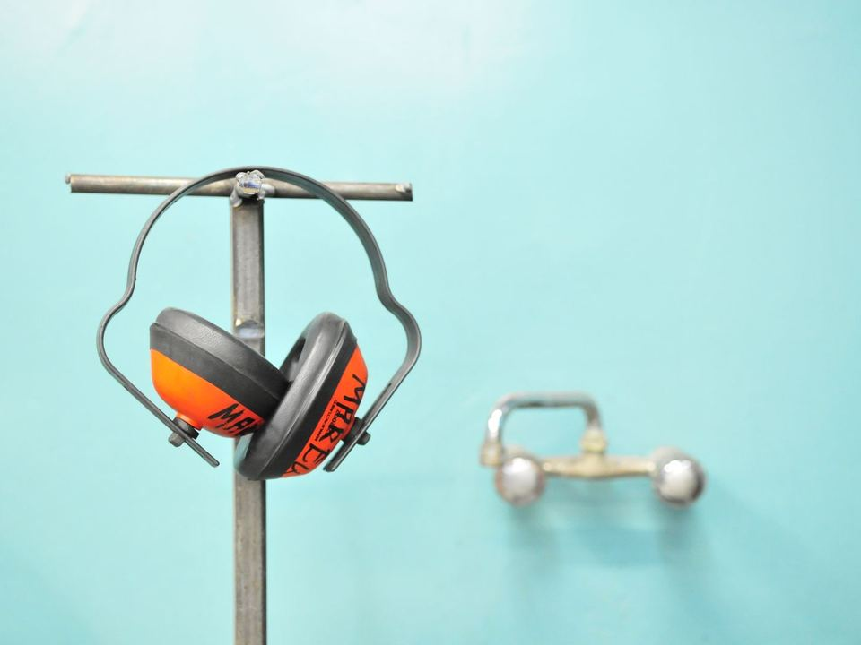
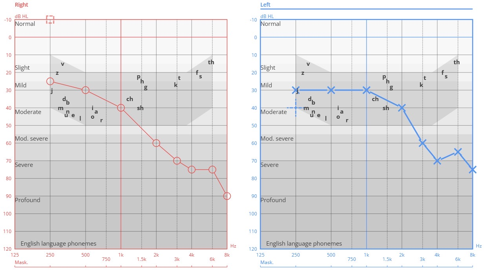
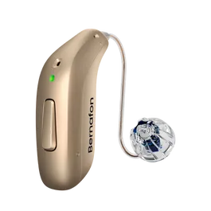
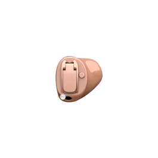

Adult hearing assessment
A complete assessment of your hearing health. Routine testing detects subtle changes early, even when your hearing feels fine. Optional tympanometry checks the eardrum and middle ear, quickly and painlessly.
Denise Aquilina
Registered Nurse and Audiologist
From workplace hearing protection to personalised audiology care, dedicated to protecting, restoring and improving hearing, with support at every step of the way.
Clinic services



A complete assessment of your hearing health. Routine testing detects subtle changes early, even when your hearing feels fine. Optional tympanometry checks the eardrum and middle ear, quickly and painlessly.
For children aged 5 and up, in a calm, child-friendly setting, with results explained clearly to parents. Tympanometry also available.
Bernafon hearing aids selected for your hearing profile and lifestyle, professionally fitted and fine-tuned, with ongoing aftercare. More about hearing aids
Made to the shape of your ear for work, travel or leisure, combining effective protection with all-day comfort.
Individually made moulds for hearing aids, for a secure and comfortable fit.
Assessments in the comfort of your own home, anywhere in Malta, by appointment. A €50 call-out fee is added to the price of the service.
Preparing for your appointment. Please bring a list of your current medication and any relevant medical history.
On-site hearing tests for your staff, with minimal disruption to your day and the report you need for your records.



The hearing aids are from Bernafon, a Swiss brand known for natural sound and for helping with high-frequency hearing loss, the most common kind.
High-frequency loss often shows up as trouble with women's and children's voices, or with sounds like "s", "f" and "th". Conversations seem mumbled, especially in busy places. The right hearing aid brings those sounds back without making everything louder.


Behind the ear Small and discreet, sitting neatly behind your ear.
In the ear Custom-made to your ear, some nearly invisible.See the full Bernafon range on their website
Hearing aids start from €850 per hearing aid. The price includes your initial assessment, a fitting appointment and a follow-up session to fine-tune the sound.
Ask about government funding for hearing aids through Aġenzija Sapport's Empowerment Scheme. Guidance is available throughout the process.
Working in occupational health nursing inspired me to continue my education and proudly become an audiologist. Now, I work across both occupational hearing settings and the clinic to protect and restore hearing health at every stage. I believe deeply in workplace safety, baseline testing, and the miracle of seeing a client's face light up when their hearing aids are activated.
Above all, I believe this profession is not a one-time visit but a lasting relationship, supporting my clients continuously throughout their hearing journey.
| Hearing assessmentAdults and children aged 5 and up. Test and consultation, 30 to 45 minutes | €50 |
|---|---|
| TympanometryA check of the eardrum and middle ear | €15 |
| Home visit call-outCharged in addition to the service fee. Available anywhere in Malta | + €50per visit |
| Workplace hearing screeningOn site, for baseline and annual records. Minimum 10 employees | €20per employee |
| Custom ear protection and ear mouldsMade to the shape of your ear. Ask for a quote | On request |
| Hearing aidsFitted to your hearing, lifestyle and preferences | From €850per hearing aid |
Every consultation and hearing aid fitting includes ongoing guidance and follow-up support, as part of a commitment to your long-term hearing journey.
Triq Balaguer, Ħal Balzan BZN 1162
Thursday and Friday
9:00 to 13:00 and 16:00 to 19:00
Accessible clinic
Get directions10 Guże Duca Street, Qormi QRM 9088
By appointment
Accessible clinic
Get directions7 Sanctuary Street, Żabbar ZBR 1010
By appointment
Accessible clinic
Get directionsNeed another day or time? Get in touch to arrange one that suits you.
No. The test is painless. You listen to soft sounds through headphones and respond when you hear them. Tympanometry, if needed, is a gentle puff of air pressure in the ear that takes a few seconds.
Between 30 and 45 minutes, including time to go through your results and options.
Yes. Many people bring a family member or friend, and it often helps to have a familiar voice in the room when discussing hearing aids.
A list of your current medication and any relevant medical history. If you already wear hearing aids, bring them along too.
The quickest way to book is WhatsApp.
Appointments are available in English, Maltese or Italian, whichever you're most comfortable with.
Thank you for taking a moment. Every review is read before it appears on the site.